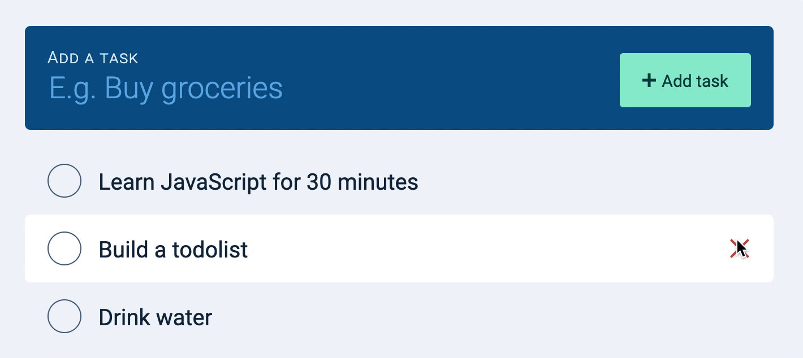
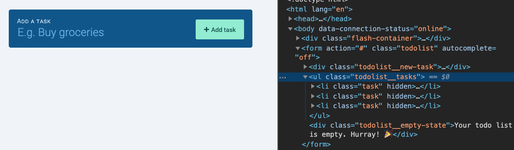
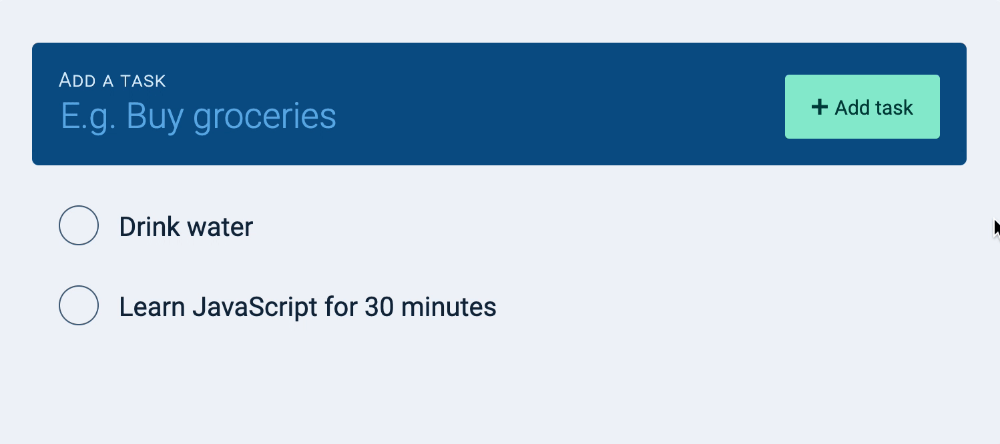

When we added a task, we used a spinner to tell users we’re adding their task to the database.
When we delete tasks, we don’t need a loading state because users won’t interact with the task anymore. This means we don’t need to do anything for the loading state.
Handle the loaded state
We need to remove the deleted task from state.tasks.
First, we need to find the location of the task in state.tasks. We can find this location with findIndex.
Then, we remove the task from state.tasks by using a combination of spread operators and slice. (Read this lesson again if this step sounds confusing).
It’s easy to create an error message. You already know what to do.
taskList.addEventListener('click', event => {
// ...
zlFetch.delete(/*...*/)
.catch(error => {
let errorMessage = ''
const { message } = error.body
if (message === 'TypeError: Failed to fetch') {
errorMessage = 'Failed to reach server. Please try again later.'
} else if (message === 'Unauthorized') {
errorMessage = 'Invalid username or password. Please check your username or password.'
} else {
errorMessage = error.body.message
}
const errorElement = makeErrorElement(errorMessage)
flashContainer.appendChild(errorElement)
})
})
We also need to restore the task back to the DOM. Here, we want to restore the task back to its original location.
If the user deletes one item at a time, restoring the task back to its original location is easy. We can use insertBefore to insert the task back to the original location.
To use insertBefore, you need to know the next task. To get the next task, you can use nextElementSibling.
If the deleted task is the last task, we need to use appendChild instead.
If we get an error, we show the task by removing the hidden attribute.
taskList.addEventListener('click', event => {
// ...
zlFetch.delete(/*...*/)
.then(/*...*/)
.catch(error => {
// Show the task
taskElement.removeAttribute('hidden')
})
})
We also create an error message.
taskList.addEventListener('click', event => {
// ...
zlFetch.delete(/*...*/)
.then(/*...*/)
.catch(error => {
// ...
taskElement.removeAttribute('hidden')
// Create error message
let errorMessage = ''
const { message } = error.body
if (message === 'TypeError: Failed to fetch') {
errorMessage = 'Failed to reach server. Please try again later.'
} else if (message === 'Unauthorized') {
errorMessage = 'Invalid username or password. Please check your username or password.'
} else {
errorMessage = error.body.message
}
const errorElement = makeErrorElement(errorMessage)
flashContainer.appendChild(errorElement)
})
})
You can delete tasks in any order now. The deleted tasks will always go back to their rightful positions if an error occurs.
(I removed the error messages in the gif below).

Fixing the empty state
The empty state shows up if taskList contains 0 children elements. It doesn’t show up if taskList contains children elements (even if they’re hidden).

We need it to show up if all children elements in taskList are hidden. The easiest way is to add an is-empty class to taskList.
We can use every to check if all tasks contain the hidden attribute.
every loops through an array of items. For each iteration, it checks if the callback is truthy. If the callback is truthy, it continues to the next iteration. If all iterations are truthy, every returns true. Otherwise, it returns false.
Try deleting all your tasks. This should trigger the empty state. Once you see the empty state, try adding a task. You should still see the empty state.

This happens because we left the is-empty class in the HTML after we deleted tasks.
The best way to hide the empty state when adding tasks is to remove the is-empty class.
todolist.addEventListener('submit', event => {
// ...
// Hides the empty state
taskList.classList.remove('is-empty')
zlFetch.post(/*...*/)
.then(/*...*/)
.catch(/*...*/)
})
If the server responds with an error, we need to show the empty state again. We don’t have to do anything here because the :empty pseudo selector will take care of the rest.